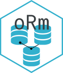

Hydrating Models from Existing Tables
Source:vignettes/hydrating-tables.Rmd
hydrating-tables.RmdWhen a database already exists, oRm can introspect its
tables and return ready-to-use TableModel objects — no need
to re-declare every column by hand. This is called
hydration.
Single-table hydration with hydrate()
engine$hydrate() inspects one table and returns a
TableModel:
library(oRm)
engine <- Engine$new(
drv = RPostgres::Postgres(),
dbname = "mydb",
host = "localhost"
)
# Reflect every column of the existing "users" table
Users <- engine$hydrate("users")
names(Users$fields)
#> [1] "id" "name" "email" "created_at"
# Narrow the model with include / exclude
Users <- engine$hydrate("users", include = c("id", "name", "email"))
Users <- engine$hydrate("users", exclude = c("password_hash", "internal_notes"))
Users$read(.mode = "data.frame")Reflection depth by dialect
| Dialect | What is reflected |
|---|---|
| Default (all) | Column names and best-effort types only |
| PostgreSQL | Canonical types, primary keys, nullability, column defaults, and foreign keys |
With PostgreSQL, hydrate() captures:
-
Canonical types — e.g.
integer,text,timestamp with time zone -
Primary key flags —
update()anddelete()work without any extra arguments -
Nullability — honoured on
create() -
Column defaults — server-side defaults such as
nextval()ornow()are stored asdbplyr::sql()objects and applied by the database at insert time;flush()reads the computed value back into the record -
Foreign keys — reflected as
ForeignKeyobjects, schema-qualified when the target lives in another schema
Overriding reflected columns
Arguments passed via ... take precedence over reflected
columns, just like engine$model(). This lets you attach a
primary key on dialects that don’t reflect one, override a type, or add
a Method():
# Supply the PK explicitly on a non-PostgreSQL backend
Users <- engine$hydrate(
"users",
id = Column("INTEGER", primary_key = TRUE)
)
# Attach a custom method alongside the reflected columns
Users <- engine$hydrate(
"users",
display_name = Method("table", function(self) {
self$read(.mode = "data.frame")$name
})
)Schema-wide hydration with hydrate_schema()
engine$hydrate_schema() hydrates every table in a schema
at once and automatically wires the many_to_one /
one_to_many relationships implied by the reflected foreign
keys.
# Hydrate all tables in the engine's default schema
models <- engine$hydrate_schema()
# Or restrict to a subset
models <- engine$hydrate_schema(tables = c("users", "posts", "comments"))
# Exclude tables you don't need
models <- engine$hydrate_schema(exclude = c("schema_migrations", "audit_log"))Accessing models
hydrate_schema() returns a named list keyed by bare
table name:
posts <- models$posts
users <- models$usersAuto-wired relationships
Every reflected ForeignKey whose target was also
hydrated is turned into a many_to_one relationship (with
the reverse one_to_many backref):
post <- posts$read(id == 1, .mode = "get")
author <- post$relationship("users") # posts.user_id -> users.id
author$data$name
#> [1] "Kent"
all_posts <- author$relationship("posts") # reverse backref
length(all_posts)
#> [1] 12Foreign keys pointing at tables outside the hydrated set are skipped with a warning. You can always wire those manually afterwards:
models$posts$define_relationship(
local_key = "category_id",
type = "many_to_one",
related_model = some_other_model,
related_key = "id",
ref = "category",
backref = "posts"
)Schema-qualified foreign keys
ForeignKey() supports cross-schema references in both
shorthand and explicit forms:
# Shorthand: "schema.table.column"
fk <- ForeignKey("INTEGER", references = "audit.users.id")
# Explicit
fk <- ForeignKey(
"INTEGER",
ref_schema = "audit",
ref_table = "users",
ref_column = "id",
on_delete = "CASCADE"
)The generated SQL qualifies the target correctly:
REFERENCES "audit"."users" ("id").
PostgreSQL reflection automatically schema-qualifies foreign keys
when the target lives in a different schema, so
hydrate_schema() handles cross-schema FK wiring
transparently.